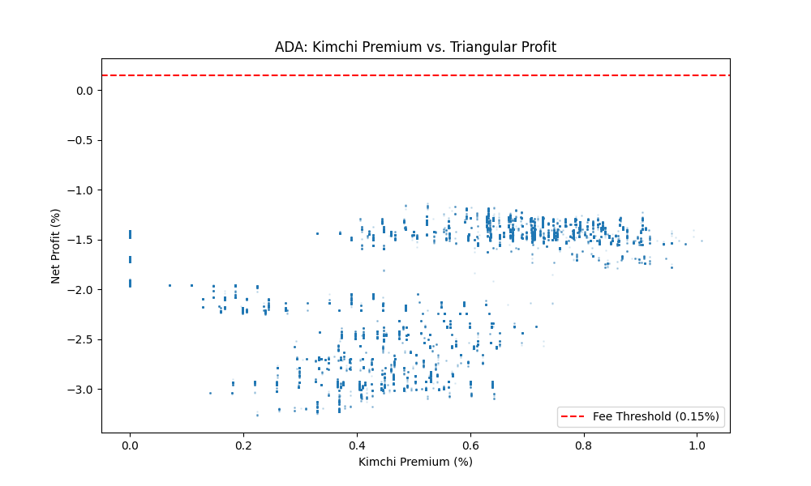
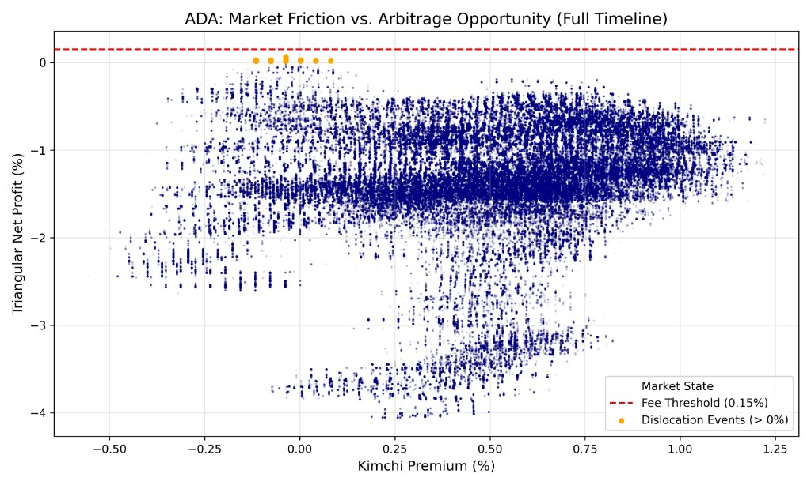

Crypto Arbitrage & Kimchi Premium Model
A paper-style project on market friction, dislocation windows, and triangular arbitrage opportunity in KRW/USDT crypto flows. KRW/USDT 시장의 마찰, 디슬로케이션 구간, 삼각 차익거래 기회를 분석한 논문형 프로젝트입니다.
Project Overview프로젝트 개요
The "Kimchi Premium" is one of the most persistent and well-documented anomalies in crypto markets: for stretches of months at a time, the same cryptocurrency trades at meaningfully higher prices on Korean exchanges like Upbit than on global exchanges like Binance. The gap has been documented at anywhere from 2% to over 50% during periods of extreme retail speculation in Korea. The structural reason it exists, and persists, is that Korea imposes strict capital controls on KRW outflows. A foreign investor cannot simply wire dollars to Korea, buy the cheaper version of a coin globally, sell it for more on Upbit, and convert the KRW back to USD at will. The friction imposed by those controls is precisely what prevents the gap from being arbitraged away instantly the way price discrepancies on two freely convertible exchanges would be. "김치 프리미엄"은 크립토 시장에서 가장 지속적이고 잘 기록된 이상 현상 중 하나입니다. 수개월에 걸쳐 동일한 암호화폐가 글로벌 거래소인 바이낸스보다 국내 거래소인 업비트에서 유의미하게 높은 가격에 거래됩니다. 한국의 극단적인 개인 투자 투기 기간에는 격차가 2%에서 50% 이상에 달하는 것으로 기록되어 있습니다. 이 현상이 존재하고 지속되는 구조적 이유는 한국이 원화 해외 유출에 엄격한 자본 이동 규제를 부과하기 때문입니다. 외국 투자자는 단순히 한국에 달러를 송금하여 글로벌 시장에서 더 싸게 코인을 사고, 업비트에서 더 높은 가격에 팔고, 원화를 다시 달러로 마음대로 환전할 수 없습니다. 바로 이 규제가 만들어내는 마찰이 자유롭게 환전 가능한 두 거래소 간의 가격 차이가 즉시 차익거래로 해소되는 방식으로 이 격차가 사라지지 않는 이유입니다.
The central question this project addresses is not whether the premium exists, it clearly does, but whether it is ever large enough to be worth trading, after accounting for all the costs and delays that a real execution would incur. Those costs are more numerous than they first appear. On the buy side, there is the exchange maker or taker fee, plus slippage from moving the market on a large order. On the transfer side, there is a blockchain withdrawal fee and a waiting period measured in minutes to hours depending on network congestion. On the sell side in Korea, there are again exchange fees and slippage. Finally, converting the KRW proceeds back to USD incurs an FX conversion spread that can itself be several tenths of a percent. Every one of these costs must be deducted from the raw premium before any profit is realized, and the sum of them defines a break-even threshold below which the trade loses money even when the premium appears to exist. 이 프로젝트가 다루는 핵심 질문은 프리미엄이 존재하는가가 아닙니다, 그것은 명확히 존재합니다, 실제 실행에서 발생하는 모든 비용과 지연을 고려한 후에도 거래할 가치가 있을 만큼 큰가입니다. 그 비용은 처음 보이는 것보다 더 많습니다. 매수 측면에서는 거래소 메이커/테이커 수수료와 대규모 주문으로 인한 시장 충격 슬리피지가 있습니다. 송금 측면에서는 블록체인 출금 수수료와 네트워크 혼잡도에 따라 수분에서 수시간에 달하는 대기 시간이 있습니다. 한국에서의 매도 측면에서도 다시 거래소 수수료와 슬리피지가 발생합니다. 마지막으로, 원화 수익을 달러로 환전하는 데 그 자체로 수십 bp에 달할 수 있는 환전 스프레드가 발생합니다. 이 모든 비용은 순이익이 실현되기 전에 원시 프리미엄에서 차감되어야 하며, 그 합계가 차익거래가 손실을 내는 손익분기 임계값을 정의합니다.
The project is structured as a quantitative research paper, written in LaTeX and generated reproducibly from Python scripts. The paper derives the break-even threshold analytically, then maps real historical premium data against that threshold to identify the specific periods, the "dislocation windows", where a trade would have been profitable after all costs. Visualizations show both a compressed historical view (to see the overall frequency of dislocation events) and a full timeline view (to study the duration and magnitude of individual episodes). All code, LaTeX source, and compiled PDFs are included so the analysis can be extended to other assets, different fee structures, or more recent data without rebuilding the pipeline from scratch. 이 프로젝트는 LaTeX로 작성되고 Python 스크립트에서 재현 가능하게 생성되는 정량적 연구 논문 형태로 구성되어 있습니다. 논문은 손익분기 임계값을 해석적으로 도출한 다음, 실제 과거 프리미엄 데이터를 해당 임계값과 대조하여 모든 비용을 차감한 후에도 거래가 수익성이 있었을 특정 기간, "디슬로케이션 윈도우", 를 식별합니다. 시각화는 디슬로케이션 사건의 전반적인 빈도를 파악하기 위한 압축 역사 뷰와 개별 에피소드의 지속 시간과 규모를 연구하기 위한 전체 타임라인 뷰 모두를 보여줍니다. 파이프라인을 처음부터 재구성하지 않고도 다른 자산, 다른 수수료 구조, 또는 더 최근 데이터로 분석을 확장할 수 있도록 모든 코드, LaTeX 원문, 컴파일된 PDF가 포함되어 있습니다.
Key Concepts Investigated탐구한 핵심 개념
Fee Threshold Model수수료 임계 모델
The fee threshold model is the analytical core of the paper. It answers the question: given a specific set of fee parameters (exchange fees on both venues, an FX spread, a slippage estimate, and a network withdrawal fee), what is the minimum observed premium P* such that the net profit of executing the full round-trip trade is strictly positive? The derivation treats each cost as a multiplicative factor on the total notional, which means the threshold is not a fixed dollar amount but a percentage of the trade size, a natural and correct framing for a leveraged strategy where all costs scale with position size.수수료 임계 모델은 논문의 분석적 핵심입니다. 특정 수수료 파라미터 집합(양쪽 거래소의 거래 수수료, 환전 스프레드, 슬리피지 추정치, 네트워크 출금 수수료)이 주어졌을 때, 전체 왕복 거래의 순이익이 양수가 되는 최소 관측 프리미엄 P*는 무엇인가라는 질문에 답합니다. 도출 과정은 각 비용을 총 명목 금액에 대한 승수 인자로 처리합니다. 이는 임계값이 고정 달러 금액이 아니라 거래 규모의 백분율임을 의미하며, 모든 비용이 포지션 크기에 따라 확장되는 레버리지 전략에 대해 자연스럽고 올바른 프레임입니다.
The model separates costs into three categories: execution costs (maker/taker fees and slippage, incurred on both the buy leg and the sell leg), transfer costs (the blockchain withdrawal fee plus the cost of time, the premium may move adversely while the transfer is in flight), and conversion costs (the USD/KRW FX spread paid when converting the KRW proceeds back to dollars). Each category is parameterized independently, which makes it straightforward to perform sensitivity analysis: holding all other costs fixed, how much does the threshold shift if Korean exchange fees increase by 0.1%? How much does it shift if network congestion doubles the expected transfer time? These sensitivity tests are included in the paper and reveal which cost category has the most leverage over the viability of the strategy.모델은 비용을 세 가지 범주로 구분합니다. 실행 비용(매수와 매도 레그 모두에서 발생하는 메이커/테이커 수수료와 슬리피지), 이전 비용(블록체인 출금 수수료와 시간 비용, 전송 중에 프리미엄이 불리하게 움직일 수 있음), 전환 비용(원화 수익을 달러로 환전할 때 지불하는 USD/KRW 환전 스프레드)입니다. 각 범주는 독립적으로 파라미터화되어 민감도 분석을 간단하게 수행할 수 있습니다. 다른 모든 비용을 고정한 채로 국내 거래소 수수료가 0.1% 증가하면 임계값은 얼마나 이동할까요? 네트워크 혼잡이 예상 전송 시간을 두 배로 늘리면 얼마나 이동할까요? 이러한 민감도 테스트는 논문에 포함되어 있으며 어떤 비용 범주가 전략의 실행 가능성에 가장 큰 영향을 미치는지 드러냅니다.
The most important output of the fee threshold model is a single time-series overlay: the empirical Kimchi premium plotted alongside the computed threshold P*. Whenever the observed premium rises above P*, the trade is theoretically profitable; whenever it falls below, the trade loses money. Plotting these two series together immediately reveals the episodic nature of the opportunity, the premium spends long stretches below threshold, punctuated by shorter windows (often coinciding with Korean retail frenzy periods or major global market dislocations) where it briefly exceeds it. The model makes these windows precisely identifiable and quantifiable, rather than leaving them as a vague qualitative observation about "when the premium is high."수수료 임계 모델의 가장 중요한 출력은 단일 시계열 오버레이입니다. 경험적 김치 프리미엄을 계산된 임계값 P*와 함께 플롯한 것입니다. 관측된 프리미엄이 P* 위로 오를 때마다 거래는 이론적으로 수익성이 있으며, 아래로 떨어질 때는 손실이 납니다. 이 두 시계열을 함께 플롯하면 기회의 에피소드적 특성이 즉시 드러납니다, 프리미엄은 임계값 아래에서 긴 구간을 보내다가, 종종 한국 개인 투자자 과열 기간이나 주요 글로벌 시장 디슬로케이션과 일치하는 짧은 구간에서 잠시 초과합니다. 모델은 이러한 구간을 막연한 정성적 관찰인 "프리미엄이 높을 때"로 남기는 대신 정확하게 식별하고 정량화할 수 있게 합니다.
Triangular Net-Profit Structure삼각 순이익 구조
The "triangular" label refers to the three distinct currency conversions that make up the complete trade: the arbitrageur starts with USD, converts to BTC at the prevailing global price (Leg 1), transfers the BTC to a Korean exchange and sells it for KRW at the higher Korean price (Leg 2), and finally converts the KRW back to USD through the foreign exchange market (Leg 3). Each leg involves a different market, a different price, and a different set of frictions. The triangular structure is what makes this trade more complex, and riskier, than a simple two-venue spread trade, because the FX conversion introduces a fourth source of uncertainty (the USD/KRW exchange rate) that is moving simultaneously with the crypto premium."삼각"이라는 레이블은 완전한 거래를 구성하는 세 가지 뚜렷한 통화 전환을 나타냅니다. 차익거래자는 USD로 시작하여 글로벌 가격으로 BTC로 전환하고(레그 1), BTC를 국내 거래소로 이전하여 더 높은 국내 가격으로 KRW에 판매하고(레그 2), 마지막으로 외환 시장을 통해 KRW를 다시 USD로 전환합니다(레그 3). 각 레그는 서로 다른 시장, 다른 가격, 다른 마찰 집합을 포함합니다. 이 삼각 구조가 이 거래를 단순한 두 거래소 스프레드 거래보다 더 복잡하고 위험하게 만드는 이유입니다. FX 전환이 크립토 프리미엄과 동시에 움직이는 네 번째 불확실성 원천(USD/KRW 환율)을 도입하기 때문입니다.
Timing risk is the dominant practical concern in the triangular structure. Between the moment you buy BTC on Binance and the moment you sell it on Upbit, anywhere from 15 minutes to several hours may elapse, and during that window, both the BTC/USD price and the KRW/USD rate can move materially against the trade. If BTC drops 2% globally while the transfer is in flight, the premium advantage is partially or entirely eroded even before exchange fees are deducted. The paper models this timing exposure explicitly by computing the expected premium decay as a function of transfer duration, using historical volatility estimates for both BTC and the USD/KRW pair to construct a distribution of possible outcomes for a trade initiated at a given premium level.타이밍 리스크는 삼각 구조에서 지배적인 실질적 우려사항입니다. 바이낸스에서 BTC를 매수하는 순간부터 업비트에서 판매하는 순간까지, 15분에서 수시간까지 경과할 수 있습니다, 그 구간 동안 BTC/USD 가격과 KRW/USD 환율 모두 거래에 불리하게 크게 움직일 수 있습니다. 전송 중에 BTC가 글로벌로 2% 하락하면, 거래소 수수료를 차감하기 전에도 프리미엄 이점이 부분적으로 또는 완전히 잠식됩니다. 논문은 이 타이밍 노출을 전송 기간의 함수로 예상 프리미엄 감소를 계산하여 명시적으로 모델링하며, BTC와 USD/KRW 쌍 모두에 대한 역사적 변동성 추정치를 사용하여 주어진 프리미엄 수준에서 시작된 거래에 대한 가능한 결과 분포를 구성합니다.
The net-profit formula that results from integrating all three legs and their associated costs is more revealing than the raw premium alone. It shows that even a 5% observed premium can result in a near-zero or negative expected profit once all frictions are correctly accounted for, and conversely, that a trader who ignores the FX dimension of the trade will systematically overestimate their expected return. The paper presents this formula in closed form, parameterized so that a reader can substitute their own fee schedule and expected transfer time to compute what threshold the premium would need to exceed for the strategy to be viable under their specific execution conditions. This makes the analysis a practical reference tool rather than just a historical case study.세 레그와 관련 비용을 통합한 결과로 나오는 순이익 공식은 원시 프리미엄만으로는 드러나지 않는 것들을 보여줍니다. 관측된 프리미엄이 5%라도 모든 마찰을 올바르게 고려하면 예상 수익이 거의 0이거나 음수가 될 수 있다는 것을 보여줍니다, 반대로, 거래의 FX 차원을 무시하는 거래자는 체계적으로 예상 수익을 과대평가할 것입니다. 논문은 이 공식을 닫힌 형태로 제시하며 파라미터화되어, 독자가 자신의 수수료 일정과 예상 전송 시간을 대입하여 자신의 특정 실행 조건 하에서 전략이 실행 가능하려면 프리미엄이 초과해야 하는 임계값을 계산할 수 있습니다. 이는 분석을 단순한 역사적 사례 연구가 아닌 실용적인 참고 도구로 만듭니다.
Auto-Generated Paper Pipeline자동 논문 생성 파이프라인
The paper pipeline was designed around a specific frustration with how quantitative research is typically presented: the analysis and the writeup are produced separately, often in completely different tools, and then manually stitched together into a final document. This workflow breaks reproducibility because the figures in the PDF are snapshots of a specific analytical run that cannot be regenerated from the LaTeX source alone. Any time the data is updated, the parameters change, or an error is found, both the code and the document need to be updated independently, and they frequently drift out of sync. The solution here is to treat the Python scripts and the LaTeX source as a single integrated system, where the scripts are the authoritative source of both the figures and certain numeric values that appear in the text.논문 파이프라인은 정량적 연구가 일반적으로 어떻게 제시되는지에 대한 특정 불만을 해소하기 위해 설계되었습니다. 분석과 글쓰기는 별도로 생산되며, 종종 완전히 다른 도구에서 작성된 후 수동으로 최종 문서에 이어 붙입니다. 이 워크플로우는 PDF의 도표가 LaTeX 원문만으로는 재생성할 수 없는 특정 분석 실행의 스냅샷이기 때문에 재현성을 깨뜨립니다. 데이터가 업데이트되거나, 파라미터가 변경되거나, 오류가 발견될 때마다 코드와 문서를 독립적으로 업데이트해야 하며 자주 동기화가 어긋납니다. 여기서의 해결책은 Python 스크립트와 LaTeX 원문을 단일 통합 시스템으로 취급하는 것입니다. 스크립트가 도표와 텍스트에 나타나는 특정 수치 값 모두의 권위 있는 원천입니다.
In practice, the pipeline works as follows. A Python script called generate_plot.py reads the raw premium time-series data, computes the fee threshold for a given set of parameters, and outputs two publication-quality figures: the compressed history view and the full timeline view. A separate script, generate_paper.py, uses these figures as inputs and writes out a complete LaTeX document, populating not just the figure references but also the numeric values quoted in the text (such as the computed threshold percentage and the number of dislocation windows identified) by reading them directly from the analysis outputs. Running both scripts followed by a LaTeX compile produces the complete paper in one automated pass. The entire pipeline can be re-run on updated data in under a minute.실제로 파이프라인은 다음과 같이 작동합니다. generate_plot.py라는 Python 스크립트가 원시 프리미엄 시계열 데이터를 읽고, 주어진 파라미터 집합에 대한 수수료 임계값을 계산하고, 두 개의 출판 품질 도표를 출력합니다. 압축 역사 뷰와 전체 타임라인 뷰입니다. 별도의 스크립트 generate_paper.py는 이 도표들을 입력으로 사용하고 완전한 LaTeX 문서를 작성합니다, 도표 참조뿐만 아니라 분석 출력에서 직접 읽어 텍스트에 인용된 수치 값(계산된 임계값 백분율과 식별된 디슬로케이션 윈도우 수 등)도 채웁니다. 두 스크립트를 실행한 후 LaTeX 컴파일을 하면 하나의 자동화된 패스로 완전한 논문이 생성됩니다. 전체 파이프라인은 1분 이내에 업데이트된 데이터에서 재실행될 수 있습니다.
Beyond the practical convenience, this design enforces a discipline that improves the quality of the research itself. Because the text and the figures are generated from the same source data in the same pipeline run, it is impossible for a figure to be out of date relative to the text, or for a quoted statistic in the body of the paper to disagree with what the corresponding plot actually shows. Discrepancies that would be easy to miss in a manual workflow become impossible by construction. This also makes the paper easy to extend: adding a new asset (say, applying the same analysis to ETH rather than BTC on the Korean premium) requires only pointing the data reader at a new input file and rerunning the pipeline, the paper structure, formatting, and text scaffolding remain intact and update automatically around the new results.실용적인 편의성을 넘어, 이 설계는 연구 자체의 품질을 향상시키는 규율을 강제합니다. 텍스트와 도표가 동일한 파이프라인 실행에서 동일한 소스 데이터로 생성되기 때문에, 도표가 텍스트에 비해 오래된 상태가 되거나 논문 본문에서 인용된 통계가 해당 플롯이 실제로 보여주는 것과 불일치하는 것이 구조적으로 불가능합니다. 수동 워크플로우에서 놓치기 쉬운 불일치가 구조상 불가능해집니다. 또한 논문을 확장하기 쉽게 만듭니다. 새로운 자산(예: 한국 프리미엄에서 BTC 대신 ETH에 동일한 분석 적용)을 추가하려면 데이터 리더를 새 입력 파일로 지정하고 파이프라인을 재실행하면 됩니다, 논문 구조, 서식, 텍스트 골격은 그대로 유지되고 새 결과에 맞게 자동 업데이트됩니다.
Visual Outputs시각화 결과
Compressed History View압축 히스토리 뷰

Full Timeline View전체 타임라인 뷰
